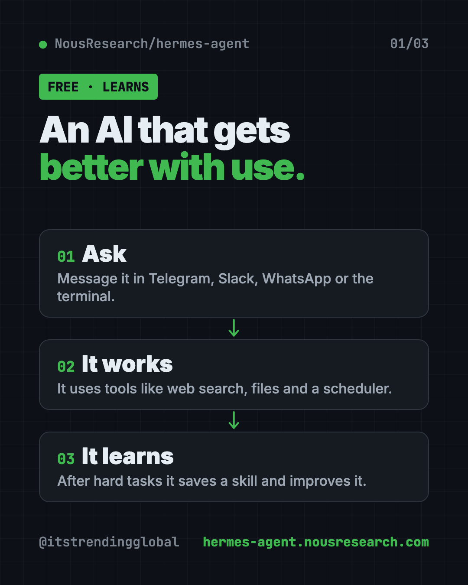
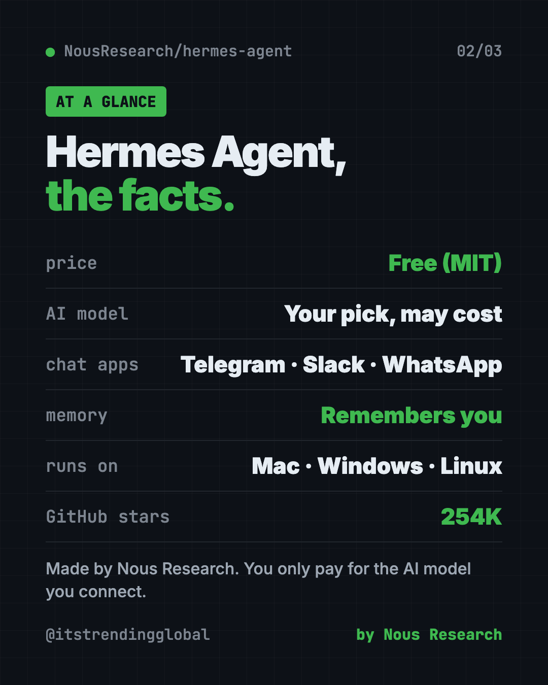
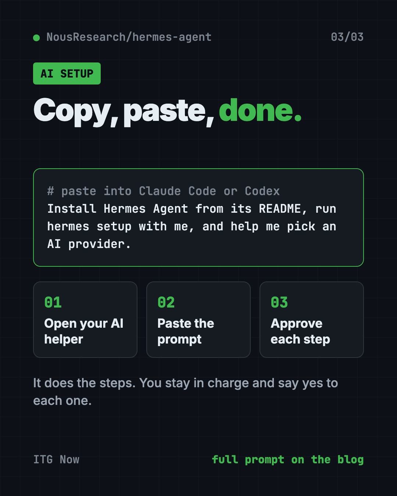

Hermes Agent: Free Self-Improving AI Agent (2026 Guide)
Hermes Agent is a free self-improving AI agent from Nous Research. It remembers you, learns new skills, and chats with you on Telegram, Slack or WhatsApp.
Hermes Agent is a free self-improving AI agent from Nous Research. It remembers what you tell it, turns hard tasks into reusable skills, and lets you chat with it from Telegram, Slack, WhatsApp and more.
Most AI chats forget you the moment you close the tab. Hermes is built to do the opposite. This guide covers what it does, real ways to use it, the exact install steps, and a prompt that lets an AI helper set it up for you.
Key takeaways
- Free and open source. The code is public under the MIT license. You only pay for the AI model you plug in.
- It learns. After a complex task, it can save the steps as a "skill" and improve that skill over time.
- It remembers you. It keeps notes, searches past chats and builds a picture of you across sessions.
- It lives in your chat apps. Telegram, Discord, Slack, WhatsApp, Signal, email or a terminal window.
- It works while you sleep. A built-in scheduler runs daily reports or weekly checks on its own.
What is Hermes Agent?
Hermes Agent is an AI "agent." An agent is an AI that does more than answer. It can use tools, search the web and run tasks for you.
It comes from Nous Research, an AI lab. The README calls it "the self-improving AI agent" with "a built-in learning loop." In plain words, it gets better at the jobs you give it the more you use it.
Hermes is not an AI model on its own. Think of it as the helper that sits on top of a model. You pick which AI "brain" it uses, like one from OpenRouter, OpenAI or Nous Portal. You can switch later with one command, hermes model.
The project is popular. It has about 254K stars on GitHub. Stars work like bookmarks, so a lot of people are watching it.

How does a self-improving AI agent learn?
Here is the loop, based on the README:
- You ask for something. Say, "Summarize my top news sites every morning."
- It does the work. It uses tools like web search, files or the terminal.
- It saves what worked. After a complex task, it can write a skill, which is a saved recipe for that job.
- It improves the skill. Each time it uses that skill, it can make it better.
It also keeps a memory. It saves notes about you, gets reminders to keep useful facts, and can search its own old conversations. Over time, you explain yourself less.
How to use Hermes Agent (real examples)
- A morning briefing on your phone. Ask it to send you a news or weather summary in Telegram each day at 7 a.m. The scheduler handles the timing.
- A team helper in Slack. Add it to your work Slack so anyone can ask it questions without opening another app.
- Voice notes to text. Send it a voice memo in a chat app. The README says it can transcribe voice memos.
- Weekly checkups. Ask for a weekly report on a folder, a website or a to-do list, written in plain language.
- One chat across apps. Start a task in the terminal, then check on it from your phone. The README calls this cross-platform conversation continuity.
💡 Tip: Start with one small daily task, like a morning summary. Once that works, add more. Small wins teach you what it can do.
Is Hermes Agent free?
The software is free. You can download it, use it and even change it.
The AI model behind it may cost money. That depends on the provider you choose. Nous also sells Nous Portal, a subscription that bundles 300+ models plus web search, image making and text-to-speech under one account. It is optional. You can bring your own keys from other providers instead.
Hermes Agent at a glance
| Price | Free software. The AI model you pick may cost money |
| Works offline | No. It needs an AI model and, for chat apps, the internet |
| Platforms | Mac, Linux, Windows (native or WSL2), Android via Termux |
| Chat apps | Telegram, Discord, Slack, WhatsApp, Signal, email, terminal |
| License | MIT (open source) |
| Made by | Nous Research |
| Best for | People who want one assistant that remembers them and works on a schedule |

How to install Hermes Agent on Mac, Windows and Linux
These are the official steps from the Hermes README. You need a computer and an account with an AI provider.
On Mac, Linux or WSL2, open Terminal. Copy and paste this:
curl -fsSL https://hermes-agent.nousresearch.com/install.sh | bash
On Windows, open PowerShell. Copy and paste this:
iex (irm https://hermes-agent.nousresearch.com/install.ps1)
After it installs, reload your terminal and start chatting. Copy and paste this:
source ~/.bashrc # reload shell (or: source ~/.zshrc)
hermes # start chatting!
Most Macs use source ~/.zshrc. Or just close the window and open a new one.
To set everything up in one go, run the setup wizard. Copy and paste this:
hermes setup
To chat from Telegram, Slack or another app, copy and paste this:
hermes gateway setup
hermes gateway start
Then send the bot a message from your chat app.
⚠️ Heads up: On Windows, some antivirus apps flag a file called
uv.exeinside the Hermes folder. The README says this is a false alarm. It is a Python tool Hermes uses, and the README shows how to check it.
Coming from OpenClaw?
If you used OpenClaw before, Hermes can import your settings, memories, skills and API keys. The setup wizard spots your old OpenClaw folder and offers to move things over. You can also run hermes claw migrate --dry-run to preview what would come across.
Let Claude or Codex set it up for you
Claude Code and OpenAI Codex are AI helpers that run setup steps on your computer. You paste a request, it does the steps, and you approve each one.
Copy and paste this:
Please help me install Hermes Agent from github.com/NousResearch/hermes-agent.
1. Check what computer I have (Mac, Windows or Linux).
2. Run the official install command from the README for my system.
3. Explain each step in plain words before you run it.
4. Run "hermes setup" with me and help me pick an AI provider.
5. Show me how to send my first message.
Then try asking:
Help me connect Hermes Agent to Telegram so I can chat with it from my phone.
Set up a Hermes scheduled task that sends me a short news summary every morning.
Run "hermes doctor" and explain anything that looks wrong.

Is Hermes Agent safe to use?
Hermes can run real commands on the machine it lives on. That is what makes it useful, and it is also why you should be careful.
The docs have a security guide. It covers approving commands, pairing direct messages so strangers can't use your bot, and running it inside a container (a sealed-off box on your computer). Read it before you connect a chat app.
⚠️ Heads up: Only give Hermes access to files and accounts you're fine with it touching. Start small and widen access as you trust it.
Who should use Hermes Agent?
- Busy professionals who want an assistant that remembers their work.
- Small business owners who want reports or reminders sent to their phone.
- Teams in Slack or Discord who want an AI helper right in the chat.
- Tinkerers who want to run an agent on a cheap rented server. The README says a $5 server works.
- OpenClaw users looking for an alternative with a built-in learning loop.
If you've never opened a terminal, expect a short learning curve. The AI setup prompt above helps a lot.
Our take
Hermes Agent stands out for memory and learning. If you want a free self-improving AI agent, it is a strong pick. Most assistants start fresh each time. This one is designed to grow with you.
What we like:
- Free MIT software from a known AI lab.
- Works with many model providers, with no lock-in.
- Meets you in the chat apps you already use.
- Built-in scheduler for hands-off daily tasks.
- Easy move over from OpenClaw.
What to watch for:
- You pay for the AI model, and heavy use adds up.
- Setup uses the terminal, which can feel new.
- It can run commands, so you need to set limits.
- It is not a phone app. You run it on a computer or server and chat from your phone.
Want to compare? See OpenClaw, a free AI assistant inside WhatsApp and Slack, or Paperclip, which runs a whole team of AI agents. Hermes also made our top 5 GitHub repos of April 2026.
FAQ
Is Hermes Agent free?
Yes. The software is free and open source under the MIT license. The AI model you connect may charge you, depending on the provider.
Does Hermes Agent remember past conversations?
Yes. It keeps notes about you, searches its own past chats, and builds a profile of you across sessions.
Can I use Hermes Agent on WhatsApp or Telegram?
Yes. Run hermes gateway setup and hermes gateway start, then message the bot. It also works with Discord, Slack, Signal and email.
Does Hermes Agent work on Windows?
Yes. The README says native Windows is fully supported with a PowerShell one-line installer. WSL2 works too.
Which AI models can Hermes Agent use?
The README lists Nous Portal, OpenRouter, OpenAI, your own endpoint and many others. You switch with the hermes model command.
Can I move from OpenClaw to Hermes Agent?
Yes. Run hermes claw migrate to import your settings, memories, skills and allowed API keys from OpenClaw.
Get Hermes Agent: github.com/NousResearch/hermes-agent
Follow @gittrendingglobal on Instagram for one free, useful tool every day.
📲 Watch it on Instagram in under a minute
Keep reading

DBX: Free Database Client for 100+ Databases, With AI (2026)
DBX is a free database client that opens 100+ kinds of databases in a 25 MB app. Its AI helper turns plain English into database queries for you.

PureMac: Free CleanMyMac Alternative, No Subscription
PureMac is a free CleanMyMac alternative. It clears junk, fully uninstalls apps and finds duplicates, with no subscription, no tracking and no scare tactics.

Strata: Run Big Local AI on a Gaming PC, Free
Strata is a free installer that runs big, private local AI on a gaming PC. It sets up a large Qwen model, so your chats never leave your computer.